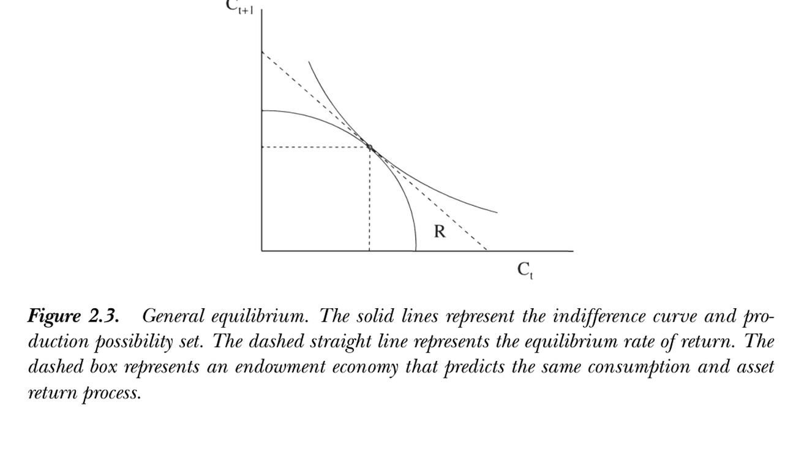
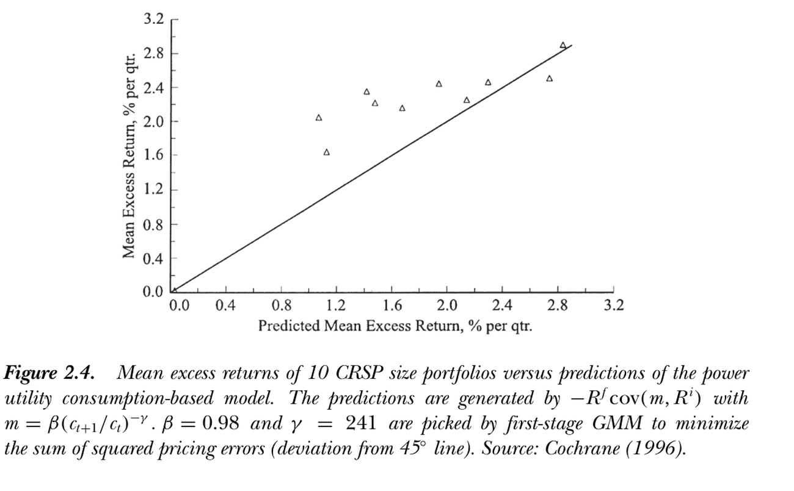

2. Applying the Basic Model
2. Applying the Basic Model
本章导读 本章（Cochrane 第 2 章）讨论 \(p=\mathbb E(mx)\) 的适用性与如何应用。§2.1 假设与适用性：\(p=\mathbb E(mx)\) 并不假设完全市场/代表性投资者、正态收益、两期/二次/可分效用、无人力资本、已达均衡——它对每个投资者、每个资产都成立；并给出对尚未持有支付的边际估值 \(v_t=\mathbb E_t[\beta\frac{u'(c_{t+1})}{u'(c_t)}x_{t+1}]\)。§2.2 一般均衡："消费与收益谁是鸡谁是蛋"——线性技术（收益外生，CAPM/ICAPM/CIR）、禀赋经济（消费外生，Lucas 1978 / Mehra-Prescott）、真实凹技术（图 2.3）三者对 \(p=\mathbb E(mx)\) 等价；三种实证策略。§2.3 实践中的消费模型：原则上完备、实践中很差（图 2.4 需 \(\gamma=241\)）。§2.4 替代模型概览：所有模型都是不同的 \(m=f(\text{data})\)——(1) 不同效用函数；(2) 一般均衡模型；(3) 因子定价 \(m=a+b_A f_A+\dots\)（CAPM、APT、ICAPM、CIR）；(4) 套利/近套利（Black-Scholes 复制）。每章末附 Problems。
2. Applying the Basic Model
Overview This chapter (Cochrane Ch 2) discusses the applicability of \(p=\mathbb E(mx)\) and how to apply it. §2.1 assumptions and applicability: \(p=\mathbb E(mx)\) does not assume complete markets / a representative investor, normal returns, two-period / quadratic / separable utility, no human capital, or that equilibrium has been reached — it holds for each investor and each asset; it also gives a marginal valuation of a payoff not yet held, \(v_t=\mathbb E_t[\beta\frac{u'(c_{t+1})}{u'(c_t)}x_{t+1}]\). §2.2 general equilibrium: "which of consumption and returns is the chicken and which the egg" — a linear technology (returns exogenous, CAPM/ICAPM/CIR), an endowment economy (consumption exogenous, Lucas 1978 / Mehra-Prescott), and a true concave technology (Figure 2.3) are equivalent for \(p=\mathbb E(mx)\); three empirical strategies. §2.3 the consumption model in practice: complete in principle, poor in practice (Figure 2.4 needs \(\gamma=241\)). §2.4 overview of alternatives: all models are different \(m=f(\text{data})\) — (1) different utility functions; (2) general equilibrium models; (3) factor pricing \(m=a+b_A f_A+\dots\) (CAPM, APT, ICAPM, CIR); (4) arbitrage / near-arbitrage (Black-Scholes replication). Each chapter ends with Problems.
2.1 假设与适用性 / Assumptions and Applicability
2.1 Assumptions and Applicability
\(p=\mathbb E(mx)\) 不需要的假设 / What \(p=\mathbb E(mx)\) does NOT assume 写下 \(p=\mathbb E(mx)\) 或 \(p_t u'(c_t)=\mathbb E_t[\beta u'(c_{t+1})x_{t+1}]\) 时，我们没有假设：(1) 市场完全或存在代表性投资者；(2) 收益正态分布或时间独立；(3) 两期投资者、二次效用或可分效用；(4) 投资者无人力资本/劳动收入；(5) 市场已达均衡。这些假设都留待后面的特例。唯一需要的是投资者可作小的边际投资/撤资。该方程对每个投资者、他能接触的每个资产成立，与其他投资者/资产无关。完全市场/代表性主体假设只在想用总消费 \(u'(c_t)\) 时才需要。均值方差有效收益无论支付分布、效用函数如何都携带全部定价信息；这也不是两期模型（对多期模型任意两期成立，全是条件矩，未假设 i.i.d.）。Writing \(p=\mathbb E(mx)\) or \(p_t u'(c_t)=\mathbb E_t[\beta u'(c_{t+1})x_{t+1}]\), we do not assume: (1) complete markets or a representative investor; (2) normal or time-independent returns; (3) two-period investors, quadratic or separable utility; (4) that investors have no human capital / labor income; (5) that the market is in equilibrium. All these come later as special cases. All we assume is that the investor can consider a small marginal investment/disinvestment. The equation holds for each investor and each asset he can access, independent of other investors/assets. Complete-markets / representative-agent assumptions are needed only to use aggregate consumption in \(u'(c_t)\). A mean-variance efficient return carries all pricing information regardless of payoff distribution or utility; and this is not a two-period model (it holds for any two periods of a multiperiod model — all conditional moments, no i.i.d. assumed).
边际估值 / Marginal valuation 甚至不需"均衡"或投资者已买入：\(p=\mathbb E(mx)\) 可解释为对尚未持有的小量支付 \(x_{t+1}\) 的愿付价格。若多得 \(\xi\) 单位支付，效用增 \(\beta\mathbb E_t[u'(c_{t+1})x_{t+1}\xi+\frac12 u''(c_{t+1})(x_{t+1}\xi)^2+\cdots]\)；付 \(v_t\xi\) 则效用减 \(u'(c_t)v_t\xi+\cdots\)。\(\xi\) 小则只有一阶项重要，故We don't even need "equilibrium" or that the investor has already bought: \(p=\mathbb E(mx)\) can be read as the willingness to pay for a small amount of a payoff \(x_{t+1}\) not yet held. Gaining \(\xi\) units raises utility by \(\beta\mathbb E_t[u'(c_{t+1})x_{t+1}\xi+\frac12 u''(c_{t+1})(x_{t+1}\xi)^2+\cdots]\); paying \(v_t\xi\) lowers it by \(u'(c_t)v_t\xi+\cdots\). For small \(\xi\) only the first-order terms matter, so
$$v_t=\mathbb E_t\left[\beta\frac{u'(c_{t+1})}{u'(c_t)}x_{t+1}\right].$$
若此私人估值高于市价 \(p_t\) 且可买入，投资者会买；买入改变其消费直到私人估值降至市价。故达到最优组合后，市价也满足基本定价方程（用事后/均衡消费）；用事前消费则给出边际私人估值或对未交易证券估值。对必须整块买入的项目（风险投资/创业），未取项目的价值 \(\mathbb E\sum_j\beta^j[u(c_{t+j}+x_{t+j})-u(c_{t+j})]\) 可能与边际值差很大——分析师常误把 CAPM 等边际（分散）估值用于整块项目。短卖/买卖价差把等式变为一组不等式。If this private valuation exceeds the market price \(p_t\) and he can buy, he will; buying changes his consumption until the private valuation falls to the market price. So after reaching the optimal portfolio, the market price also obeys the basic pricing equation (using post-trade / equilibrium consumption); using pre-trade consumption gives the marginal private valuation or values a not-yet-traded security. For projects that must be bought in discrete chunks (venture capital / entrepreneurship), the value of a project not yet taken, \(\mathbb E\sum_j\beta^j[u(c_{t+j}+x_{t+j})-u(c_{t+j})]\), can differ substantially from the marginal one — analysts often wrongly apply marginal (diversified) valuation like the CAPM to discrete projects. Short sales / bid-ask spreads turn the equality into a set of inequalities.
2.2 一般均衡 / General Equilibrium
鸡与蛋：三种技术结构 / Chicken and egg: three technology structures \(p=\mathbb E(mx)\) 只在给定消费与支付联合分布时告诉你价格；但也可写 \(u'(c_t)=\mathbb E_t[\beta u'(c_{t+1})x_{t+1}/p_t]\)，把它看作给定价格与支付决定今日消费（永久收入模型）。谁外生谁内生？都不是，且对很多目的无所谓——一阶条件刻画任何均衡。三种极端：(1) 线性技术（图 2.1，实际收益率不受投资量影响，消费须调整以匹配技术给定的收益）——这是 CAPM、ICAPM、Cox-Ingersoll-Ross (1985) 期限结构模型的工作方式（设定收益过程、再解消费/组合规则）；(2) 禀赋经济（图 2.2，无法储蓄/转移消费，资产价格须调整到人们恰好乐于消费禀赋流——消费外生，Lucas 1978、Mehra-Prescott 1985）；(3) 真实经济与严肃一般均衡（图 2.3，可转移但边际递减）。\(p=\mathbb E(mx)\) only tells you the price given the joint distribution of consumption and payoffs; but one can also write \(u'(c_t)=\mathbb E_t[\beta u'(c_{t+1})x_{t+1}/p_t]\) and read it as determining today's consumption given prices and payoffs (the permanent income model). Which is exogenous, which endogenous? Neither, and for many purposes it does not matter — the first-order conditions characterize any equilibrium. Three extremes: (1) linear technology (Figure 2.1, the real rate of return is unaffected by how much is invested, so consumption must adjust to technologically given returns) — this is how the CAPM, ICAPM, and the Cox-Ingersoll-Ross (1985) term-structure model work (specify the return process, then solve consumption/portfolio rules); (2) endowment economy (Figure 2.2, nothing can be saved/transformed, so asset prices adjust until people are happy consuming the endowment stream — consumption exogenous, Lucas 1978, Mehra-Prescott 1985); (3) the real economy and serious general equilibrium (Figure 2.3, transformation possible but at a decreasing rate).
三种实证策略等价 / The three empirical strategies are equivalent 从图 2.3 的均衡出发，若用线性技术建模但恰取与一般均衡相同的收益过程，则联合消费-收益过程完全相同；用禀赋经济建模但恰取均衡消费过程亦然。故三策略皆可：(1) 建模债券股票收益的统计模型 → 解最优消费组合 → 把均衡消费代入 \(p=\mathbb E(mx)\)；(2) 建模消费过程 → 由 \(p=\mathbb E(mx)\) 直接算价格收益；(3) 建完整一般均衡模型（含技术、效用、市场结构）→ 导出均衡。若统计模型正确（与真实均衡过程一致），前两者都给正确预测。Lucas (1978) 禀赋经济是突破：固定 \(m\) 算 \(p=\mathbb E(mx)\) 远比为给定收益解联合消费-组合问题容易——可孤立看每个资产，这正是本书结构与众不同（直接建模消费、把组合问题推后）的原因。但谈政策/新市场影响时须真正用一般均衡思维（永久收入宏观经济学家恰好作相反假设）。Starting from the equilibrium of Figure 2.3, modeling it with a linear technology but choosing exactly the return process that emerges from general equilibrium gives an identical joint consumption-return process; likewise modeling it as an endowment economy with the equilibrium consumption process. So three strategies all work: (1) build a statistical model of bond/stock returns → solve the optimal consumption-portfolio → use equilibrium consumption in \(p=\mathbb E(mx)\); (2) model the consumption process → compute prices/returns directly from \(p=\mathbb E(mx)\); (3) build a complete general equilibrium model (technology, utility, market structure) → derive the equilibrium. If the statistical model is right (coincides with the true equilibrium process), the first two give correct predictions. Lucas's (1978) endowment economy is a breakthrough: evaluating \(p=\mathbb E(mx)\) for fixed \(m\) is far easier than solving joint consumption-portfolio problems for given returns — one can look at each asset in isolation, which is why this book's structure is unusual (model consumption directly, defer portfolio problems). But for policy / new-market questions one must really think in general-equilibrium terms (permanent-income macroeconomists make exactly the opposite assumption).

图 2.3：一般均衡。实线为无差异曲线与生产可能性集，虚直线为均衡收益率，虚线框表示一个能给出相同消费-收益过程的禀赋经济。
Figure 2.3: General equilibrium. The solid lines are the indifference curve and production possibility set; the dashed straight line is the equilibrium rate of return; the dashed box is an endowment economy predicting the same consumption-return process.
2.3 实践中的消费模型 / Consumption-Based Model in Practice
原则上完备、实践中很差 / Complete in principle, poor in practice 消费模型原则上可回答所有估值问题（任何证券/现金流，只需效用形式、参数值、消费与支付的条件分布统计模型）。以幂效用 \(u'(c)=c^{-\gamma}\) (2.1) 为例，超额收益应满足The consumption model can in principle answer all valuation questions (any security/cash flow, given a utility form, parameter values, and a statistical model of the conditional distribution of consumption and payoffs). With power utility \(u'(c)=c^{-\gamma}\) (2.1), excess returns should obey
$$0=\mathbb E_t\left[\beta\left(\frac{c_{t+1}}{c_t}\right)^{-\gamma}R^e_{t+1}\right],\tag{2.2}$$
取无条件期望并用协方差分解：taking unconditional expectations and the covariance decomposition:
$$\mathbb E(R^e_{t+1})=-R^f\,\mathrm{cov}\left(\beta\left(\frac{c_{t+1}}{c_t}\right)^{-\gamma},R^e_{t+1}\right).\tag{2.3}$$
现值式 \(p_t=\mathbb E_t\sum_{j=1}^\infty\beta^j(\frac{c_{t+j}}{c_t})^{-\gamma}d_{t+j}\) (2.4)；债券、期权无需单独理论（都可代入相应支付）。但表现很差：图 2.4（10 个 CRSP 规模组合的平均超额收益 vs 模型预测）须取 \(\gamma=241\) 才"最好看"，定价误差与组合间期望收益之差同量级。The present-value form \(p_t=\mathbb E_t\sum_{j=1}^\infty\beta^j(\frac{c_{t+j}}{c_t})^{-\gamma}d_{t+j}\) (2.4); bonds and options need no separate theory (just plug in the relevant payoff). But it performs poorly: Figure 2.4 (mean excess returns of 10 CRSP size portfolios vs the model's predictions) needs \(\gamma=241\) to look best, and pricing errors are of the same order of magnitude as the spread in expected returns across portfolios.

图 2.4：10 个 CRSP 规模组合的平均超额收益 vs 幂效用消费模型的预测（\(-R^f\mathrm{cov}(m,R^i)\)，\(m=\beta(c_{t+1}/c_t)^{-\gamma}\)）。一阶 GMM 取 \(\beta=0.98\)、\(\gamma=241\) 以最小化定价误差平方和（偏离 45° 线）。来源：Cochrane (1996)。
Figure 2.4: Mean excess returns of 10 CRSP size portfolios vs the power-utility consumption model's predictions (\(-R^f\mathrm{cov}(m,R^i)\), \(m=\beta(c_{t+1}/c_t)^{-\gamma}\)). First-stage GMM picks \(\beta=0.98\), \(\gamma=241\) to minimize the sum of squared pricing errors (deviation from the 45° line). Source: Cochrane (1996).
2.4 替代资产定价模型概览 / Alternative Asset Pricing Models: Overview
所有模型都是不同的 \(m=f(\text{data})\) / All models are different \(m=f(\text{data})\) 消费模型的差表现促使寻找替代——不同的 \(m=f(\text{data})\)：(1) 不同效用函数：哪些变量进入边际效用比函数形式更重要（耐用品、闲暇、昨日消费 → 非可分性；用股东微观消费；异质投资者聚合使截面收入方差进入总边际效用）。(2) 一般均衡模型：把决策规则 \(c_t=f(y_t,i_t,\dots)\) 代入，把资产价格连到测得更好的宏观总量；并能回答结构性问题（政策、新证券对协方差 beta 的影响——一阶条件无法回答）。(3) 因子定价模型：直接把 \(m\) 设为一组代理变量的线性函数The poor performance motivates alternatives — different \(m=f(\text{data})\): (1) different utility functions: which variables enter marginal utility matters more than the functional form (durables, leisure, yesterday's consumption → nonseparabilities; use stockholders' micro consumption; aggregation of heterogeneous investors makes the cross-sectional variance of income enter aggregate marginal utility). (2) general equilibrium models: substitute decision rules \(c_t=f(y_t,i_t,\dots)\) to link asset prices to better-measured macro aggregates, and answer structural questions (how policy or new securities affect the covariance/beta — which manipulating first-order conditions cannot). (3) factor pricing models: specify \(m\) directly as a linear function of proxies
$$m_{t+1}=a+b_A f^A_{t+1}+b_B f^B_{t+1}+\cdots,\tag{2.5}$$
因子 \(f^i\) 是边际效用的合理代理（刻画投资者是否快乐）：CAPM \(m_{t+1}=a+bR^W_{t+1}\)（\(R^W\) 总财富收益，常用价值加权 NYSE 组合代理）；APT（由收益协方差矩阵因子分析得到的宽基组合）；ICAPM（GNP、通胀及预测宏观/收益的变量）；CIR 期限结构（短期利率与若干利差）。许多因子模型本就是线性技术、无劳动收入的一般均衡模型。(4) 套利/近套利定价：仅凭 \(p=\mathbb E(mx)\) 存在与 \(m\ge0\) 即可由一些支付的价格推出另一些——Black-Scholes 是范式：期权支付可由股票债券组合复制，故任何给股票债券定价的 \(m\) 即给出期权价（第 17 章用更弱的 \(m\) 限制推广）。where the factors \(f^i\) are plausible proxies for marginal utility (whether investors are happy/unhappy): CAPM \(m_{t+1}=a+bR^W_{t+1}\) (\(R^W\) the return on total wealth, often proxied by the value-weighted NYSE portfolio); APT (broad portfolios from a factor analysis of the return covariance matrix); ICAPM (macro variables such as GNP and inflation and variables forecasting macro/returns); CIR term structure (the short rate and a few interest spreads). Many factor models are themselves general equilibrium models with linear technology and no labor income. (4) arbitrage / near-arbitrage pricing: the mere existence of \(p=\mathbb E(mx)\) and \(m\ge0\) can deduce prices of some payoffs from others — Black-Scholes is the paradigm: the option payoff is replicated by a stock-bond portfolio, so any \(m\) pricing the stock and bond prices the option (Chapter 17 generalizes with weaker restrictions on \(m\)).
Problems / 习题
习题 / Problems 1. CRRA 代表性消费者、消费为禀赋流：(a) 对数效用下价格/消费比为常数（与消费增长分布无关）；(b) "未来消费更高"的消息对价格的影响，分 \(\gamma<1\)、\(\gamma=1\)、\(\gamma>1\) 讨论（\(\gamma>1\) 给"市场对好经济消息下跌"一个完全实际、无摩擦的解释）。2. 线性二次永久收入模型：消费者 \(\max\mathbb E\sum_t\beta^t(-\frac12)(c_t-c^*)^2\) s.t. 线性技术 \(k_{t+1}=(1+r)k_t+i_t\)、\(i_t=e_t-c_t\)，\(\beta=1/(1+r)\)。证明最优消费 \(c_t=rk_t+r\beta\sum_j\beta^j\mathbb E_t e_{t+j}\) (2.6)（消费=永久收入），且 \(c_t=c_{t-1}+(\mathbb E_t-\mathbb E_{t-1})r\beta\sum_j\beta^j e_{t+j}\) (2.7)（消费随机游走，新息=永久收入新息）。1. CRRA representative consumer, consumption = endowment stream: (a) under log utility the price/consumption ratio is constant (independent of the consumption-growth distribution); (b) the effect on the price of news that future consumption will be higher, for \(\gamma<1\), \(\gamma=1\), \(\gamma>1\) (\(\gamma>1\) gives a fully real, frictionless interpretation of "the market falls on good economic news"). 2. Linear-quadratic permanent income model: \(\max\mathbb E\sum_t\beta^t(-\frac12)(c_t-c^*)^2\) s.t. linear technology \(k_{t+1}=(1+r)k_t+i_t\), \(i_t=e_t-c_t\), \(\beta=1/(1+r)\). Show optimal consumption \(c_t=rk_t+r\beta\sum_j\beta^j\mathbb E_t e_{t+j}\) (2.6) (consumption = permanent income), and \(c_t=c_{t-1}+(\mathbb E_t-\mathbb E_{t-1})r\beta\sum_j\beta^j e_{t+j}\) (2.7) (consumption follows a random walk whose innovations equal permanent-income innovations).